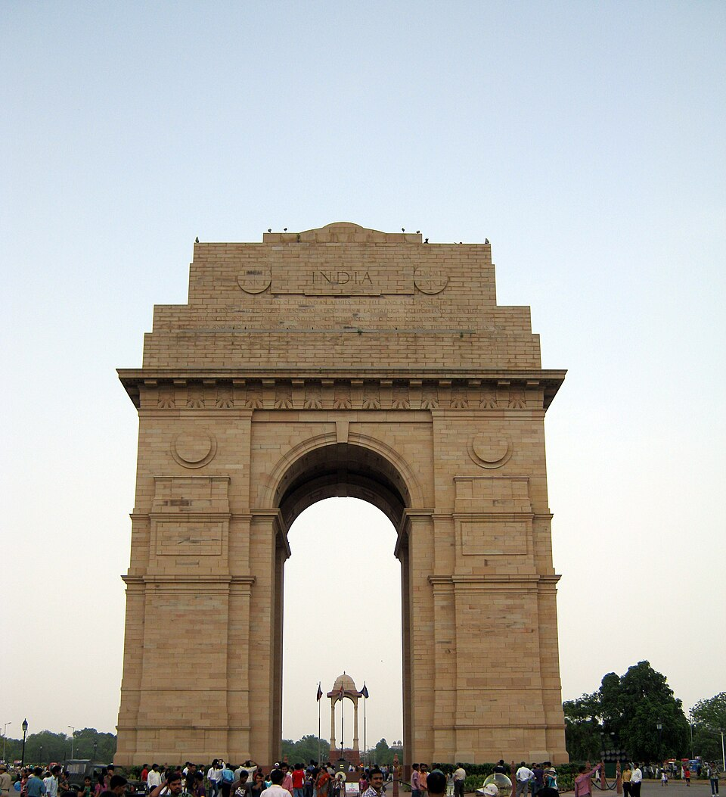

राष्ट्रीय
राष्ट्रीयसंसद सत्र से पहले मोदी कैबिनेट की बैठक में परिसीमन विधेयक पर हो सकती है चर्चा
संसद के आगामी सत्र से पहले शुक्रवार को होने वाली केंद्रीय मंत्रिमंडल की बैठक में परिसीमन और महिला आरक्षण विधेयक पर चर्चा संभावित है।
ताज़ा ख़बरें
 अंतरराष्ट्रीय
अंतरराष्ट्रीयअमेरिका में ट्रंप और नाटो प्रमुख की बैठक, रूस से युद्ध न बढ़ाने की अपील
अमेरिका के फ्लोरिडा में डोनाल्ड ट्रंप और नाटो महासचिव मार्क रुटे ने बैठक की। दोनों नेताओं ने रूस से यूक्रेन संघर्ष को और न बढ़ाने की अपील की है।
राष्ट्रीयपरिसीमन विधेयक पर कार्ति चिदंबरम के संकेत, बदल सकता है डीएमके और एनसीपी-एसपी का रुख
कांग्रेस सांसद कार्ति चिदंबरम ने परिसीमन विधेयक को लेकर डीएमके और एनसीपी-एसपी के रुख में संभावित बदलाव के संकेत दिए हैं। उन्होंने सोशल मीडिया पर पोस्ट कर यह बात कही।
राष्ट्रीयअखिलेश यादव ने आजम खान को एयरपोर्ट छोड़ा, यूपी चुनाव से पहले सियासी संकेत
उत्तर प्रदेश विधानसभा चुनाव से पहले समाजवादी पार्टी प्रमुख अखिलेश यादव ने आजम खान को खुद अपनी गाड़ी से एयरपोर्ट पहुंचकर विदा किया, जिसे एक बड़े राजनीतिक संकेत के रूप में देखा जा रहा है।
राष्ट्रीयजाकिर नाइक के संगठन इस्लामिक रिसर्च फाउंडेशन पर कार्रवाई का अधिकार राज्यों को मिला
केंद्र सरकार ने जाकिर नाइक के प्रतिबंधित संगठन इस्लामिक रिसर्च फाउंडेशन के खिलाफ UAPA के तहत फंड और प्रॉपर्टी जब्त करने का अधिकार राज्य सरकारों को दे दिया है।
राष्ट्रीयहैदराबाद में संविधान दिवस पर कांग्रेस और BRS कार्यकर्ताओं के बीच झड़प
तेलंगाना के हैदराबाद में संविधान दिवस पर कांग्रेस और BRS कार्यकर्ताओं के बीच झड़प हो गई। BRS नेता राहुल गांधी का पुतला रखकर बिरयानी प्रोटेस्ट कर रहे थे।
राष्ट्रीयसंसद सत्र से पहले प्रधानमंत्री नरेंद्र मोदी की अध्यक्षता में आज होगी कैबिनेट बैठक
संसद के आगामी सत्र से पहले प्रधानमंत्री नरेंद्र मोदी की अध्यक्षता में आज दोपहर केंद्रीय कैबिनेट की बैठक होगी। इसमें परिसीमन और महिला विधेयक पर चर्चा की संभावना है।
राष्ट्रीयबिहार: कटिहार में ग्रामीण कार्य विभाग के इंजीनियर के ठिकानों पर विजिलेंस की छापेमारी
बिहार के कटिहार में निगरानी विभाग ने ग्रामीण कार्य विभाग के कार्यपालक अभियंता अजीत कुमार दास के किराए के मकान पर छापेमारी की। जांच के दौरान जमीन के कई डीड और दस्तावेज बरामद हुए हैं।
अंतरराष्ट्रीयहमास की तारीफ के आरोपों पर घिरे जमात प्रमुख, ऑस्ट्रेलिया दौरा बीच में छोड़ा
बांग्लादेशी पार्टी जमात-ए-इस्लामी के प्रमुख शफीकुर रहमान ने हमास नेताओं की प्रशंसा के आरोपों के बीच अपना ऑस्ट्रेलिया दौरा बीच में ही छोड़ दिया है। पार्टी ने इस संबंध में ऑस्ट्रेलियाई अखबार को कानूनी नोटिस भेजा है।
 राष्ट्रीय
राष्ट्रीयचेन्नई के दंपती ने तिरुमाला मंदिर में किया 121 किलोग्राम सोने का दान
चेन्नई के एक दंपती ने तिरुपति स्थित तिरुमाला वेंकटेश्वर मंदिर में 121 किलोग्राम सोना दान किया है, जिसकी बाजार में कीमत करीब ₹206 करोड़ बताई गई है।
राष्ट्रीयझारखंड के गिरिडीह में एक ही परिवार के आठ लोग अचानक बेहोश, धनबाद में भर्ती
झारखंड के गिरिडीह जिले में एक ही परिवार के आठ सदस्यों की अचानक तबीयत बिगड़ गई। चक्कर आने और बेहोशी के बाद सभी को धनबाद के अस्पताल में भर्ती कराया गया है, जहां डॉक्टरों की देखरेख में उनका इलाज जारी है।
अंतरराष्ट्रीयभारत और UAE ने मिलकर नए रक्षा उपकरण बनाने पर सहमति जताई
अबू धाबी में हुई संयुक्त रक्षा सहयोग समिति की 14वीं बैठक में भारत और संयुक्त अरब अमीरात ने मिलकर अगली पीढ़ी के रक्षा उपकरण बनाने और रक्षा क्षेत्र में सहयोग बढ़ाने पर सहमति जताई है।
राष्ट्रीयबंगाली अभिनेत्री मिमी चक्रवर्ती ने की सगाई, सोशल मीडिया पर साझा की तस्वीरें
बंगाली अभिनेत्री मिमी चक्रवर्ती ने एक अंतरंग समारोह में सगाई कर ली है। उन्होंने सोशल मीडिया पर रजिस्ट्री की तस्वीरें साझा की हैं, हालांकि मंगेतर का चेहरा छिपा रखा है।
राष्ट्रीय18 साल से हत्या के मामले में फरार आरोपी यूएई से भारत लाया गया
करीब 18 साल पुराने हत्या मामले में फरार चल रहे आरोपी सुजीत कुमार को इंटरपोल के रेड नोटिस के आधार पर यूएई से गिरफ्तार कर भारत लाया गया है।
 अंतरराष्ट्रीय
अंतरराष्ट्रीयइंटरपोल के 18 देशों में अभियान में 65 गिरफ्तार, दो फर्जी भारतीय पासपोर्ट धारक भी पकड़े गए
इंटरपोल के नेतृत्व में 18 देशों में चलाए गए एक बड़े अभियान के दौरान 65 लोगों को गिरफ्तार किया गया है। इस कार्रवाई में फर्जी भारतीय पासपोर्ट के साथ यात्रा कर रहे दो यात्री भी पकड़े गए हैं।
राष्ट्रीयहैदराबाद में बीआरएस का 'बिरयानी विरोध', कांग्रेस कार्यकर्ताओं के साथ झड़प
तेलंगाना के हैदराबाद में राहुल गांधी के वादों को लेकर बीआरएस और कांग्रेस कार्यकर्ताओं के बीच झड़प हो गई। बीआरएस नेताओं ने तीन साल पहले के दौरे की बरसी पर अनोखा प्रदर्शन किया।
राष्ट्रीयपश्चिम बंगाल: ममता बनर्जी के भाई स्वपन बनर्जी ने अभिषेक बनर्जी के खिलाफ की FIR की मांग
पश्चिम बंगाल की मुख्यमंत्री ममता बनर्जी के भाई स्वपन बनर्जी उर्फ बाबुन ने अपने भतीजे अभिषेक बनर्जी पर धमकाने और रक्तदान शिविर रोकने का आरोप लगाते हुए कोलकाता के कालीघाट थाने में FIR की मांग की है।
राष्ट्रीयसंसद के आगामी सत्र से पहले परिसीमन के मुद्दे पर कांग्रेस ने उठाए सवाल
संसद के आगामी सत्र से पहले कांग्रेस ने शरद पवार और एमके स्टालिन के रुख को लेकर सवाल उठाए हैं। कार्ति चिदंबरम और माणिकम टैगोर के बयानों से राजनीतिक हलकों में चर्चा तेज हो गई है।
व्यापारदिल्ली सर्राफा बाजार में सोना 1,500 रुपए महंगा, चांदी स्थिर
रुपये में कमजोरी और निचले स्तर पर खरीदारी के चलते दिल्ली सर्राफा बाजार में गुरुवार को सोना 1,500 रुपए बढ़कर 1,27,500 रुपए प्रति 10 ग्राम हो गया, जबकि चांदी 1.50 लाख रुपए प्रति किलोग्राम पर स्थिर रही।
खेलसोशल मीडिया पर वायरल हुआ अर्जुन तेंदुलकर और सानिया चंडोक का वीडियो
क्रिकेटर सचिन तेंदुलकर के बेटे अर्जुन तेंदुलकर और उनकी पत्नी सानिया चंडोक का एक वीडियो सोशल मीडिया पर चर्चा में है। फैंस इस जोड़े की सादगी और केमिस्ट्री की तारीफ कर रहे हैं।
राष्ट्रीयतहसीन पूनावाला ने नेटफ्लिक्स को दी चेतावनी, पाकिस्तानी सीरीज के भारत में प्रसारण का विरोध
राजनैतिक विश्लेषक तहसीन पूनावाला ने नेटफ्लिक्स की पाकिस्तानी सीरीज 'जो बच्चे हैं संग समेट लो' के भारत में रिलीज होने पर कड़ा विरोध जताया है।
राष्ट्रीयजलगांव के मजदूर के बेटे भूषण ठाकरे ने 'कौन बनेगा करोड़पति' में जीते एक करोड़ रुपये
महाराष्ट्र के जलगांव के रहने वाले 28 वर्षीय भूषण ठाकरे ने लोकप्रिय गेम शो 'कौन बनेगा करोड़पति' में एक करोड़ रुपये जीते हैं। यूपीएससी की तैयारी कर रहे भूषण ने लगभग एक दशक के संघर्ष के बाद यह सफलता हासिल की है।
राष्ट्रीयमहाराष्ट्र के भूषण ठाकरे ने कौन बनेगा करोड़पति में जीते एक करोड़ रुपये
महाराष्ट्र के जलगांव के रहने वाले यूपीएससी अभ्यर्थी भूषण ठाकरे ने लोकप्रिय क्विज शो 'कौन बनेगा करोड़पति' में एक करोड़ रुपये की राशि अपने नाम की है।
राष्ट्रीयसंसद सत्र से पहले शुक्रवार को होगी केंद्रीय कैबिनेट की बैठक
30 नवंबर से शुरू हो रहे लोकसभा के विशेष सत्र से पहले शुक्रवार को केंद्रीय कैबिनेट की बैठक होगी, जिसमें परिसीमन से जुड़े महिला आरक्षण विधेयक पर चर्चा संभव है।
व्यापार1 दिसंबर से आसान होगा जीएसटी रजिस्ट्रेशन रद्द करना, ऑनलाइन पूरी होगी प्रक्रिया
केंद्र सरकार ने जीएसटी नियमों में बदलाव किया है। इसके तहत 1 दिसंबर से कारोबारी पोर्टल के माध्यम से ऑनलाइन ही अपना जीएसटी रजिस्ट्रेशन रद्द करा सकेंगे, जिससे सरकारी दफ्तरों के चक्कर लगाने से राहत मिलेगी।
 अंतरराष्ट्रीय
अंतरराष्ट्रीयचीन के अंतरिक्ष स्टेशन पर पाकिस्तानी अंतरिक्ष यात्री के लिए विशेष हलाल मेन्यू
चीन के शेनझोउ-24 अंतरिक्ष मिशन के तहत तियांगोंग स्पेस स्टेशन पहुंचे पाकिस्तानी अंतरिक्ष यात्री मोहम्मद ज़ीशान अली के लिए बटर चिकन और निहारी समेत विशेष हलाल व्यंजनों का इंतज़ाम किया गया है।
राष्ट्रीयराहुल गांधी राजनीतिक दिखावे के लिए करते हैं संविधान का इस्तेमाल: अमित शाह
केंद्रीय गृह मंत्री अमित शाह ने दिल्ली में एक कार्यक्रम के दौरान कांग्रेस नेता राहुल गांधी पर निशाना साधा। उन्होंने कहा कि संविधान की प्रति जेब में रखना या लहराना उसका सम्मान नहीं है।
 राष्ट्रीय
राष्ट्रीयश्रीनगर के लाल चौक पर कड़ी सुरक्षा के बीच मनाई गई दिवाली
जम्मू-कश्मीर के श्रीनगर स्थित लाल चौक पर कुछ लोगों द्वारा कड़ी सुरक्षा के बीच दिवाली मनाए जाने का मामला सामने आया है। इस दौरान स्थानीय स्तर पर धार्मिक आयोजनों और पाबंदियों को लेकर चर्चा शुरू हो गई है।

अंतरराष्ट्रीयदिल्ली से लाहौर तक वायु प्रदूषण और स्मॉग का गंभीर संकट
भारत और पाकिस्तान के बड़े शहर गंभीर वायु प्रदूषण की चपेट में हैं, जिससे आम जनजीवन प्रभावित हो रहा है। दोनों देशों के बीच साझा समाधान तलाशने के बजाय अक्सर आरोप-प्रत्यारोप देखने को मिलते हैं।
राष्ट्रीयसुधांशु त्रिवेदी ने समाजवादी पार्टी के 2027 घोषणापत्र पर उठाए सवाल
भाजपा नेता सुधांशु त्रिवेदी ने समाजवादी पार्टी के नए घोषणापत्र को महज एक औपचारिकता बताया है। उन्होंने विपक्षी दलों पर वादे पूरे न करने का आरोप लगाया है।
व्यापारजेट एयरवेज के पूर्व कर्मचारियों को बड़ी राहत, 7 साल बाद मिलेगा पीएफ और ग्रेच्युटी का पैसा
एनसीएलएटी ने जेट एयरवेज के पूर्व कर्मचारियों को ब्याज सहित पीएफ और ग्रेच्युटी का भुगतान करने का निर्देश दिया है। लिक्विडेटर को 14 दिन के भीतर करीब ₹480 करोड़ की यह राशि चुकाने को कहा गया है।
 खेल
खेलसैयद मुश्ताक अली ट्रॉफी: मुंबई और विदर्भ ने नॉकआउट में बनाई जगह
सैयद मुश्ताक अली ट्रॉफी 2026-27 के एलीट ग्रुप-D से मुंबई और विदर्भ ने नॉकआउट चरण में प्रवेश कर लिया है। दोनों टीमों के 26-26 अंक रहे, लेकिन बेहतर नेट रन रेट के कारण मुंबई शीर्ष पर रहा।
राष्ट्रीयमध्य प्रदेश: नागौद SDM सोमेश द्विवेदी और ब्यौहारी SDM अर्चना मिश्रा परिणय सूत्र में बंधे
मध्य प्रदेश के नागौद SDM सोमेश द्विवेदी और ब्यौहारी SDM अर्चना मिश्रा विवाह बंधन में बंध गए हैं। रीवा में कॉलेज के दिनों से शुरू हुई उनकी दोस्ती प्रशासनिक सेवा तक पहुंची और अब शादी में बदल गई है।
राष्ट्रीयसंसद सत्र का प्रस्ताव, लोकसभा 30 नवंबर और राज्यसभा 2 दिसंबर को बैठेगी
केंद्रीय मंत्री किरेन रिजिजू ने बताया कि सरकार ने लोकसभा स्पीकर और राज्यसभा के सभापति से संसद के दोनों सदनों की बैठकें फिर से बुलाने का अनुरोध किया है।
व्यापार₹2000 से कम में खरीदें रूम हीटर, खरीदारी से पहले इन 3 बातों का रखें ध्यान
सर्दियों में ₹2,000 से कम बजट में रूम हीटर खरीदने का मन बना रहे हैं, तो हीटिंग तकनीक, बिजली की खपत और सुरक्षा फीचर्स की जानकारी अवश्य रखें।
 राष्ट्रीय
राष्ट्रीयसपा ने जारी किया 2027 चुनाव का मैनिफ़ेस्टो, आज़म ख़ान ने जेल के दिनों को किया याद
समाजवादी पार्टी ने 2027 के उत्तर प्रदेश विधानसभा चुनाव के लिए अपना मैनिफ़ेस्टो जारी कर दिया है। इस दौरान वरिष्ठ नेता आज़म ख़ान ने जेल में बिताए अपने दिनों का ज़िक्र करते हुए अखिलेश यादव की तारीफ़ की।
राष्ट्रीयसंसद का विशेष सत्र, लोकसभा 30 नवंबर और राज्यसभा 2 दिसंबर को होगी शुरू
केंद्र सरकार ने संसद का विशेष सत्र बुलाया है। इसके तहत लोकसभा की कार्यवाही 30 नवंबर से और राज्यसभा की कार्यवाही 2 दिसंबर से शुरू होगी।
राष्ट्रीयकेंद्र सरकार ने बुलाई संसद के दोनों सदनों की एक-एक दिन की बैठक
केंद्र सरकार ने संसद का एक-एक दिन का सत्र बुलाया है। लोकसभा की बैठक 30 नवंबर और राज्यसभा की बैठक 2 दिसंबर को होगी। महिला आरक्षण बिल लाए जाने की अटकलें लगाई जा रही हैं।
राष्ट्रीयउत्तराखंड की गरतांग गली: 11 हजार फीट की ऊंचाई पर स्थित ऐतिहासिक लकड़ी का रास्ता
उत्तराखंड के उत्तरकाशी जिले में स्थित गरतांग गली लगभग 11,000 फीट की ऊंचाई पर बना एक ऐतिहासिक लकड़ी का रास्ता है, जो अपनी प्राकृतिक खूबसूरती और ट्रेकिंग के लिए प्रसिद्ध है।
अंतरराष्ट्रीयईरान में प्रदर्शनों के बाद मौत की सजा का सामना कर रही महिलाएं
ईरान में सरकार विरोधी प्रदर्शनों के बाद मौत की सजा का सामना कर रही कुछ महिलाओं ने जेल से मदद की गुहार लगाई है। मानवाधिकार संगठनों ने सजाओं में बढ़ोतरी पर चिंता जताई है।